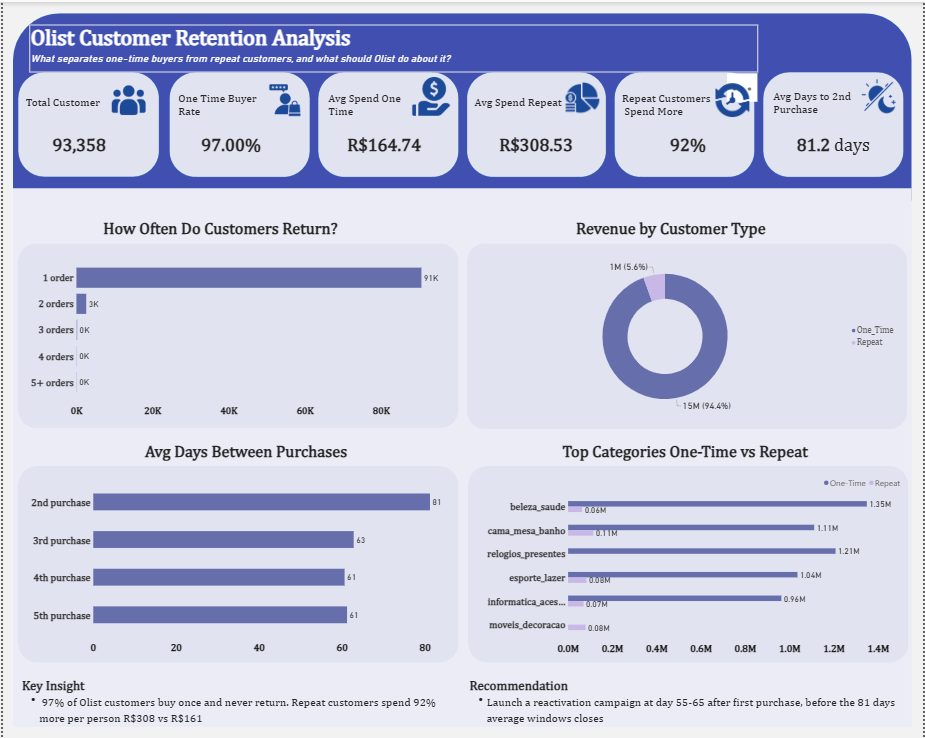

Case study 01
Olist is a marketplace connecting Brazilian sellers to customers. The business question: what share of customers ever purchase a second time, what separates repeat buyers from one-time buyers, and where is the actionable lever?
Six sequential SQL queries in MySQL, structured as an elimination exercise: measure the retention rate, size the value gap between the two groups, then test candidate explanations one by one (product category, review scores, purchase timing, seller) until only defensible causes remain. The import required engineering work of its own: converting TEXT columns to VARCHAR to enable indexing, then creating indexes that brought the heaviest query to an 8.13 second runtime. Engineering report
Of 93,358 customers, only about 3% ever return. Retention, not acquisition, is the structural problem. olist_analysis.sql · Q1
R$308.53 average total spend per repeat customer versus R$160.74 per one-time customer, which sizes the prize for moving even a small share of customers into a second purchase. olist_analysis.sql · Q2
Top product categories are nearly identical between one-time and repeat buyers, and average review scores are nearly identical as well (4.15 versus 4.21). Whatever drives churn, it is not visibly what customers bought or how they rated the experience. olist_analysis.sql · Q3, Q4
Customers who do return take 81.2 days on average to buy again, noticeably longer than the roughly 60 to 63 day gaps between later purchases. The data suggests the first 60 to 80 days after an initial order is the critical period. olist_analysis.sql · Q5
Ranking sellers with 50 or more customers by repeat rate, a small group retains 12 to 23 percent of their customers against a platform average of 2.76 percent. Location, category, and review scores were all ruled out as explanations, which points to a real seller-specific practice this dataset cannot name. olist_analysis.sql · Q6
Run a reactivation campaign timed to day 55 to 65 after first purchase, ahead of the 81-day window closing. Do not spend on product or service fixes to drive retention, since both were ruled out as differentiators. Commission a seller operations audit to identify what the high-retention sellers do differently, since the cause is not observable in this dataset.
